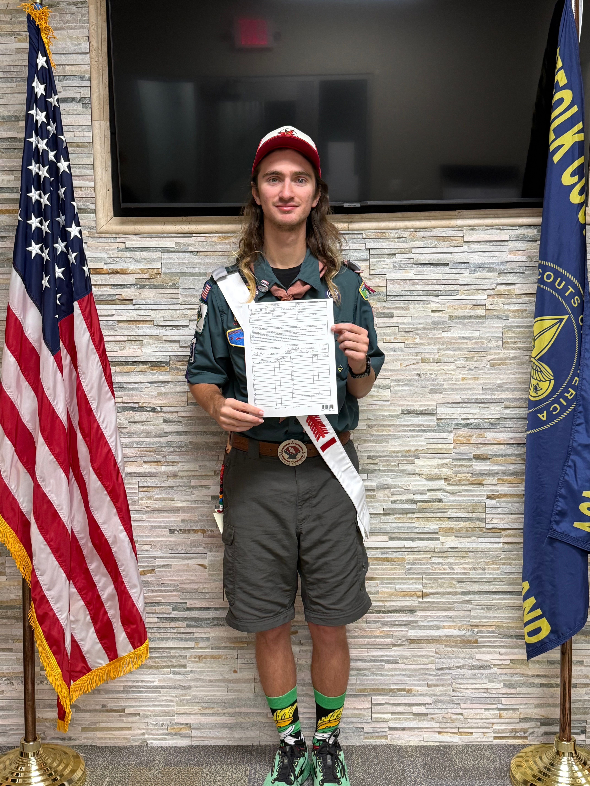
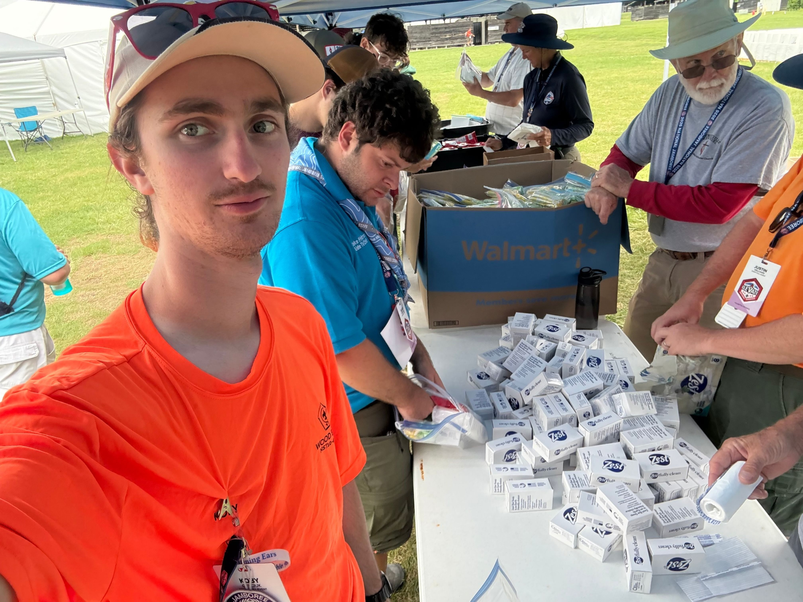
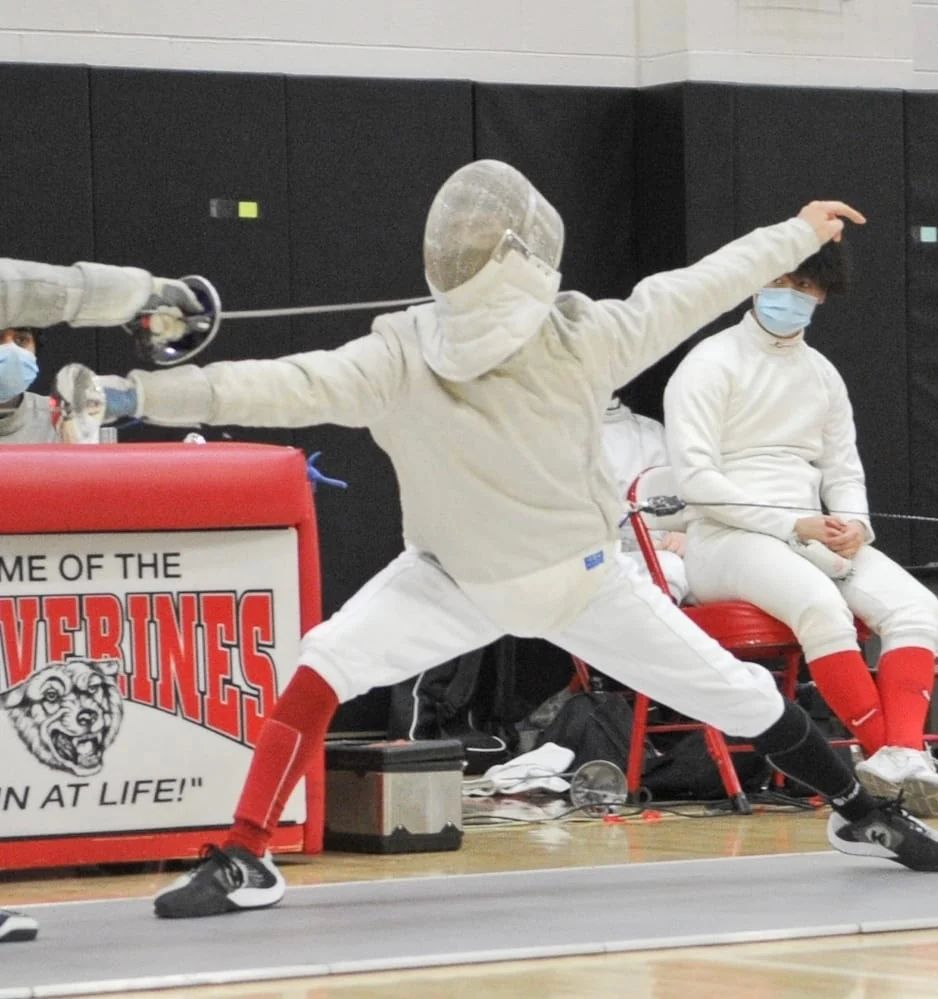

About me

My name is Koby Gryciuk. I am a senior in Computer Programming and Information Systems at Farmingdale State College. I am an Eagle Scout from Troop 362 and an avid fencer.
My goal is to work as a video game programmer. Along the way I have built a range of programming projects and picked up experience in video recording and editing, Photoshop, animation, and retail point-of-sale systems.
Eagle Scout and leadership
I earned the rank of Eagle Scout in January of 2019. I have held various leadership positions taught me how to plan work, guide a group, and take responsibility for results. Some leadership roles I have held include Assitant Senior Patrol Leader and Patrol Leader in my troop. I also have had the honor of serving as Lodge Treasurer, Lodge Vice Chief, and Lodge Chief for Shinnecock Lodge 360 of the Order of the Arrow, Scouting National Honor Society.

Outside of class
I fence competitively, which keeps me focused, disciplined, and quick to adapt.

Get in touch